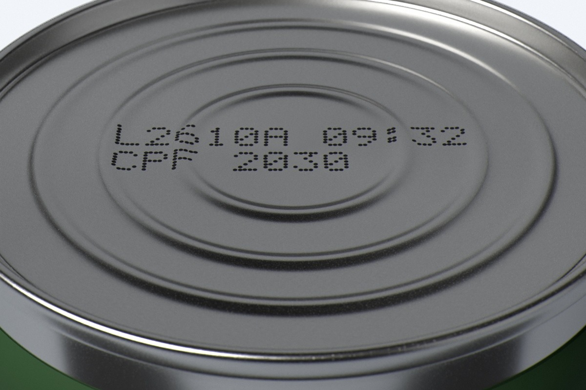
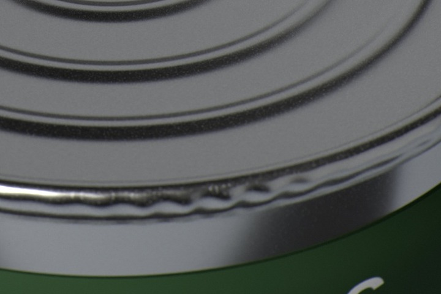
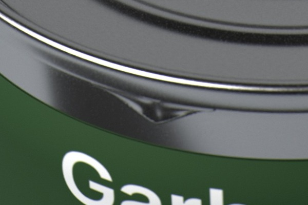
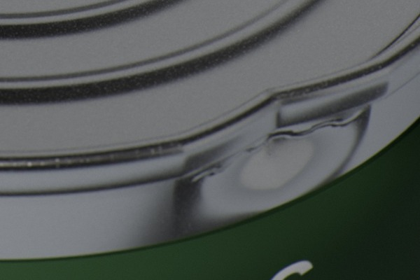
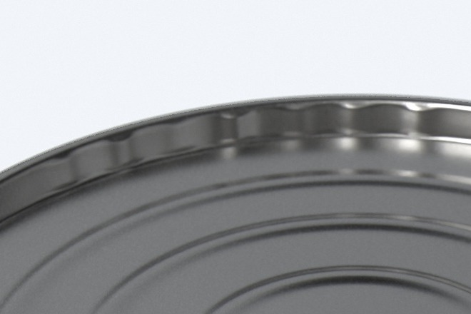
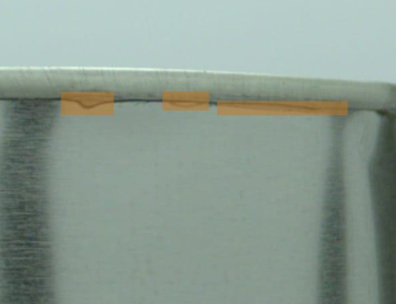
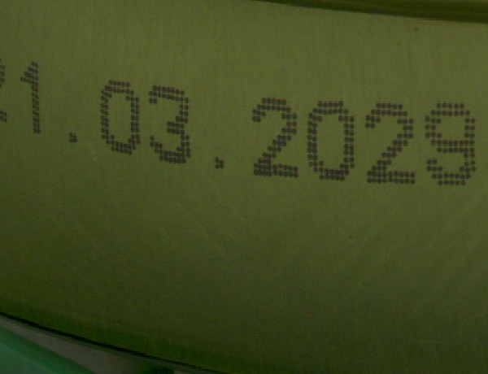

Every container, around its entire perimeter
Defects and dents in the metal or double seam, printed lithography, labels and batch, expiry-date and barcode markings.

Correct seam

False seam

Second-operation roll fault

Droop

Lower flange fault

Chuck fault
Dents in the metal

Seam defects

Batch and expiry-date reading
- Errors in printed lithography
- Missing or incorrectly positioned labels
- Barcode reading
- Containers of any shape